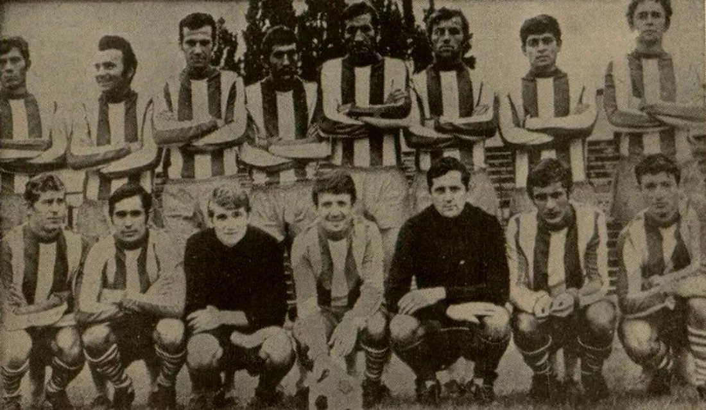

ISTORIE
- ACASA
- STADION
- ULTRAS ARAD
- PALMARES
- ISTORIE
- CLASAMENT
- GALERIE
- SPONSORI
- TICKETING

Echipa in sezonul 1969-1970
Supranumită Bătrâna Doamnă a fotbalului românesc, este una
dintre cele mai titrate echipe de fotbal din România
Bătrâna Doamnă a fost înființată de baronul Francisc von Neuman,
patronul Întreprinderii Textile Arad, la data de 18 aprilie 1945
La 1 septembrie 1946 cu ocazia meciului I.T.A. - Ciocanul,
scor 1-0, are loc inaugurarea stadionului din Arad, actualul Stadion Francisc von Neuman.
La acea vreme fiind considerat cel mai frumos stadion din țară
Clubul se înscrie în Campionatul Național de Fotbal, în ediția
1946/47, purtând numele I.T.A., inițialele întreprinderii. Prima participare, în primul
eșalon fotbalistic, aduce și primul titlu de campioană, la o diferență de 11 puncte față
de locul 2
În ediția 1970/71 ocupă locul IV și participă în Cupa
Campionilor Europeni, reușind performanța de a elimina deținătoarea trofeului la acea dată,
Feyenoord Rotterdam
În ediția 2019-2020 ocupă locul I in Liga 2 și promoveaza in Liga 1
dupa o asteptare de 12 ani si 2 baraje de promovare pierdute, dupa un meci jucat la Pitesti
cu FC Arges, scor 1-1